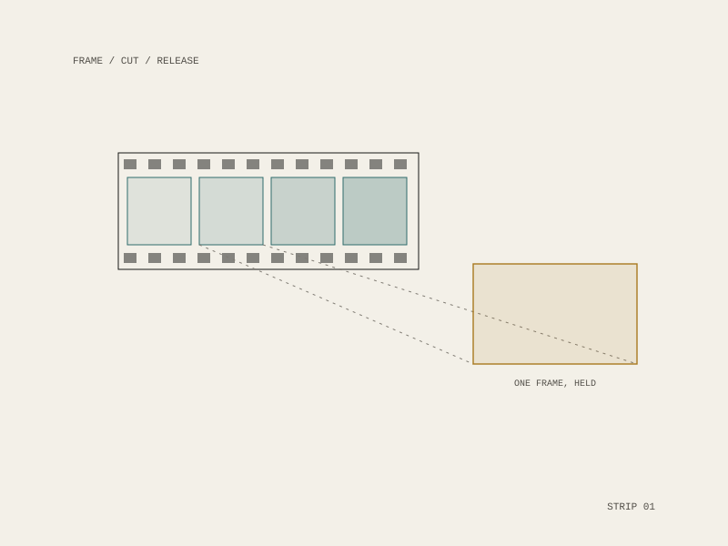

14 / project
13Bit Productions
Underground film, shorts, and the Labs
A New York film production company making feature and short films alongside experimental work under the Labs and House of Bit.

The company
13Bit Productions was established in New York in 2004, working across features, short films and underground production, with experimental strands running under the Labs and House of Bit alongside a video-out practice.
It is the earliest of the moving-image work here, and the point in the sequence where the recurring interest starts: not the finished cut but the apparatus around it: what a frame is, what it costs to make one, and who gets to.
Form
New York, established 2004
Features, shorts, the Labs, House of Bit
New York, established 2004
Features, shorts, the Labs, House of Bit